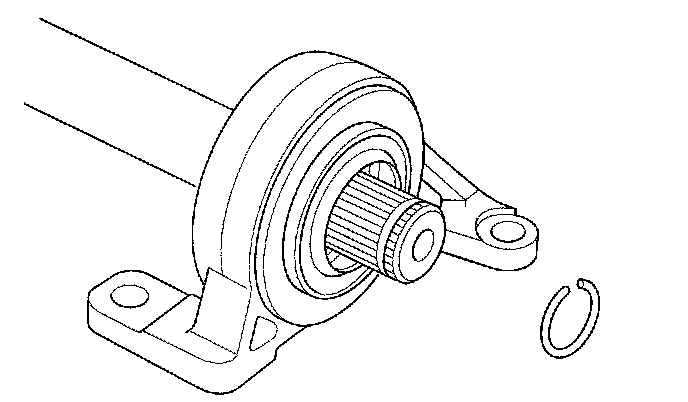
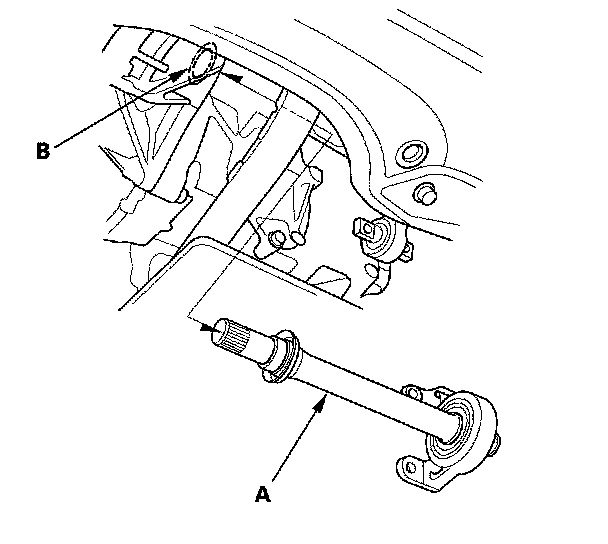
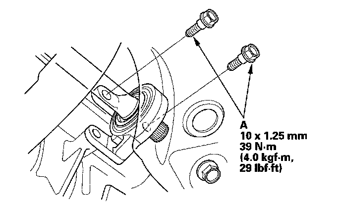
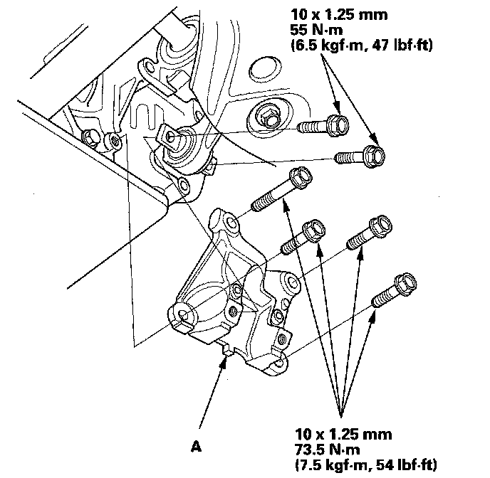
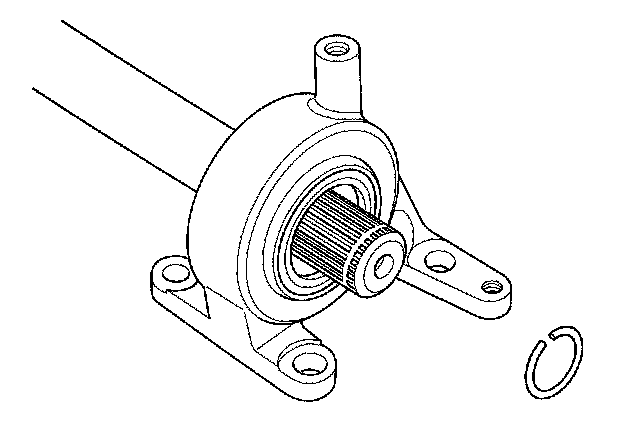
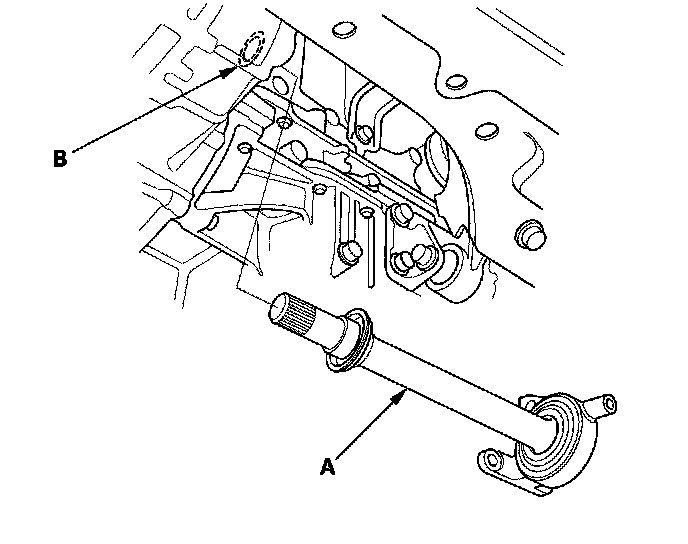
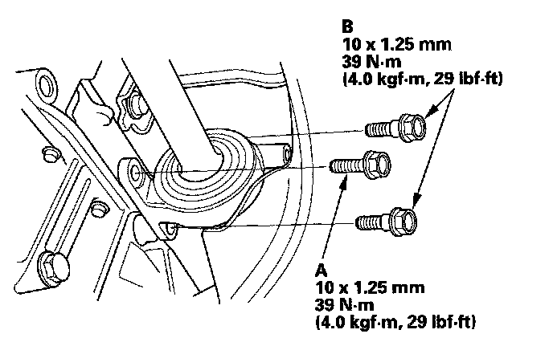
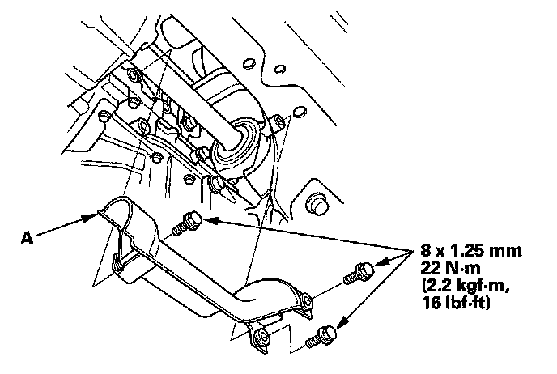

Intermediate Shaft Installation
Intermediate Shaft Installation5-speed model (Except Si)
1. Install the new set ring.

2. Clean the areas where the intermediate shaft contacts the differential thoroughly with solvent or brake cleaner, and dry with compressed air.
NOTE: Do not wash the rubber parts with solvent.
3. Insert the intermediate shaft assembly (A) into the differential until the set ring locks in the groove.
NOTE: Insert the intermediate shaft horizontally to prevent damaging the differential oil seal (B).

4. Install the flange bolts (A).

5. Install the lower torque rod bracket (A), and tighten the flange bolts in the sequence shown.

6. Install the right driveshaft.
7. Refill the transmission with the recommended transmission fluid.
8. Test-drive the vehicle.
6-speed M/T model (Si)
1. Install the new set ring.

2. Clean the areas where the intermediate shaft contacts the differential thoroughly with solvent or brake cleaner, and dry with compressed air.
NOTE: Do not wash the rubber parts with solvent.
3. Insert the inboard end (A) of the driveshaft into the differential (B) or intermediate shaft (C) until the set ring (D) locks in the groove (E).

NOTE: Insert the driveshaft horizontally to prevent damaging the differential oil seal.
4. Install the flange bolt (A) and the two shoulder bolts (B).

5. Install the heat shield (A), and tighten the three bolts.

6. Install the right driveshaft.
7. Refill the transmission with the recommended transmission fluid.
8. Test-drive the vehicle.